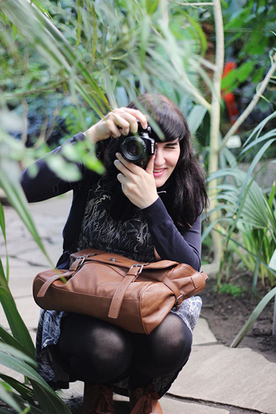

About Me
I'm Andrea Rodriguez. I take pictures of cats, dogs, rabbits, hamsters, and even a few reptiles here and there.
Born in Puerto Rico, grew up in Boston, Mass. Now I'm living in Los Angeles, California.
I love to show pet's personalities no matter what the setting. Some animals are a little more difficult to pose than others, but it's that unexpected playfulness that I enjoy capturing the most. I specialize in commercial pet photography, but also do fundraising events, family shoots, and competitions.